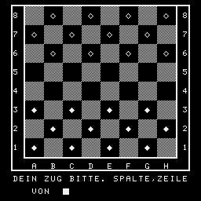

10 WINDOW:CLS
20 FOR I=0 TO 31:PRINT AT(4,I);"":A=31-I:PRINT AT(10,A);"":NEXT
30 FOR I=4 TO 9:PRINT AT(I,31);"":A=14-I:PRINT AT(A,0);"":NEXT
40 PRINT AT(6,3);"S U P E R - D A M E"
50 PRINT AT(8,3);"COPRYRIGHT BY R.STEINBRINK"
60 WINDOW 11,31,0,31:CLS
70 PRINT:PRINT:PRINT:PRINT "WILLST DU MIT SCHWARZEN(S) ODER"
80 INPUT "WEISSEN(W) STEINEN SPIELEN";F$
90 IF F$="W"GOTO 110
100 IF F$<>"S"GOTO 60
110 POKE 112,0:POKE 113,18:INPUT " WILLST DU BEGINNEN ? (J/N)";B$
120 IF B$="J"OR B$="N"THEN 140
130 GOTO 110
140 PRINT:PRINT:PRINT " ALSO DANN ..."
150 PRINT:PRINT " VIEL ERFOLG !!!":PAUSE 20
170 WINDOW:CLS
180 PRINT " ";:FOR I=1 TO 28:PRINT "";:NEXT:PRINT ""
190 FOR I=1 TO 4
200 FOR J=1 TO 3
210 PRINT " "
220 NEXT J
230 FOR J=1 TO 3
240 PRINT " "
250 NEXT J,I
260 PRINT " "
270 PRINT " A B C D E F G H "
280 PRINT " ";:FOR I=1 TO 28:PRINT "";:NEXT:PRINT ""
290 A=-5054
300 FOR I=56 TO 49 STEP-1
310 POKE A,I:POKE A+27,I
320 A=A+96:NEXT
330 IF F$="W"THEN A$(1)="":A$(3)="":ELSE A$(1)="":A$(3)=""
340 DATA 2,8,2,14,2,20,2,26,5,5,5,11,5,17,5,23,8,8,8,14,8,20,8,26
350 DATA 17,5,17,11,17,17,17,23,20,8,20,14,20,20,20,26,23,5,23,11,23,17
360 DATA 23,23
370 FOR I=1 TO 3 STEP 2
380 FOR J=1 TO 12
390 READ A,B
400 PRINT AT(A,B);A$(I)
410 NEXT J,I
420 IF F$="W"THEN A$(0)="":A$(1)="":A$(2)=" ":A$(3)="":A$(4)="":GOTO 440
430 A$(0)="":A$(1)="":A$(2)=" ":A$(3)="":A$(4)=""
440 G=-1:R(1)=-99
450 DATA 1,0,1,0,0,0,-1,0,0,1,0,0,0,-1,0,-1,15
460 RESTORE 450
470 FOR X=1 TO 8:FOR Y=1 TO 8
480 READ J
490 IF J=15 THEN 520
500 S(X,Y)=J
510 GOTO 540
520 RESTORE 450
530 READ S(X,Y)
540 NEXT Y
550 NEXT X
560 IF B$="J"THEN 1470
570 WINDOW 28,31,0,31:CLS:PRINT:PRINT " MOMENT BITTE ! ICH DENKE.":FOR X=1 TO 8
580 FOR Y=1 TO 8
590 IF S(X,Y)>-1 THEN 710
600 IF S(X,Y)<>-1 THEN 650
610 FOR A=-1 TO 1 STEP 2
620 B=G
630 GOSUB 740
640 NEXT A
650 IF S(X,Y)<>-2 THEN 710
660 FOR A=-1 TO 1 STEP 2
670 FOR B=-1 TO 1 STEP 2
680 GOSUB 740
690 NEXT B
700 NEXT A
710 NEXT Y
720 NEXT X
730 GOTO 980
740 U=X+A:V=Y+B
750 IF U<1 OR U>8 OR V<1 OR V>8 THEN 830
760 IF S(U,V)<>0 THEN 790
770 GOSUB 840
780 GOTO 830
790 IF S(U,V)<0 THEN 830
800 U=U+A:V=V+B
810 IF U<1 OR V<1 OR U>8 OR V>8 THEN 830
820 IF S(U,V)=0 THEN GOSUB 840
830 RETURN
840 IF V=1 AND S(X,Y)=-1 THEN Q=Q+2
850 IF ABS(Y-V)=2 THEN Q=Q+5
860 IF ABS(Y-V)=2 AND S(X,Y)=-2 THEN Q=Q+5
870 IF Y=8 THEN Q=Q-2
880 IF Y=1 OR U=8 THEN Q=Q+1
890 FOR C=-1 TO 1 STEP 2
900 IF U+C<1 OR U+C>8 OR V+G<1 THEN 940
910 IF S(U+C,V+G)<0 THEN Q=Q+1:GOTO 940
920 IF U-C<1 OR U-C>8 OR V-G>8 THEN 940
930 IF S(U+C,V+G)>0 AND(S(U-C,V-G)=0 OR(U-C=X AND V-G=Y))THEN Q=Q-2
940 NEXT C
950 IF Q>R(1)THEN R(1)=Q:R(2)=X:R(3)=Y:R(4)=U:R(5)=V
960 Q=0
970 RETURN
980 IF R(1)=-99 THEN 1840
990 R1$=CHR$(R(2)+64)
999 REM ROST-DEZ.86
1000 R2$=CHR$(R(4)+64)
1010 CLS:PRINT:PRINT " ICH SETZE VON ";R1$;R(3);"NACH ";R2$;R(5)
1020 R(1)=-99:PAUSE 50
1030 IF R(5)=1 THEN S(R(4),R(5))=-2:GOTO 1050
1040 S(R(4),R(5))=S(R(2),R(3))
1050 S(R(2),R(3))=0
1060 IF ABS(R(2)-R(4))<>2 THEN 1270
1070 S((R(2)+R(4))/2,(R(3)+R(5))/2)=0
1080 X=R(4):Y=R(5)
1090 IF S(X,Y)<>-1 THEN 1150
1100 B=-2
1110 FOR A=-2 TO 2 STEP 4
1120 GOSUB 1290
1130 NEXT A
1140 GOTO 1210
1150 IF S(X,Y)<>-2 THEN 1210
1160 FOR A=-2 TO 2 STEP 4
1170 FOR B=-2 TO 2 STEP 4
1180 GOSUB 1290
1190 NEXT B
1200 NEXT A
1210 IF R(1)=-99 THEN 1260
1220 R1$=CHR$(R(4)+64)
1230 CLS:PRINT:PRINT " HI HI HI ... UND NACH ";R1$;R(5):PAUSE(20)
1240 R(1)=-99
1250 GOTO 1030
1260 GOSUB 1740
1270 GOSUB 1330
1280 GOTO 1460
1290 U=X+A:V=Y+B
1300 IF U<1 OR V<1 OR U>8 OR V>8 THEN 1320
1310 IF S(U,V)=0 AND S(X+A/2,Y+B/2)>0 THEN GOSUB 840
1320 RETURN
1330 WINDOW
1340 FOR Y=7 TO 1 STEP-2
1350 FOR X=1 TO 8 STEP 2
1360 I=3*X
1370 PRINT AT((9-Y)*3-1,I+2);A$(S(X,Y)+2)
1380 NEXT X,Y
1390 FOR Y=8 TO 1 STEP-2
1400 FOR X=2 TO 8 STEP 2
1410 I=3*X
1420 PRINT AT((9-Y)*3-1,I+2);A$(S(X,Y)+2)
1430 NEXT X,Y
1440 WINDOW 28,31,0,31
1450 RETURN
1460 PRINT
1470 WINDOW 28,31,0,31:CLS:PRINT " DEIN ZUG BITTE. SPALTE,ZEILE"
1480 PRINT:INPUT " VON ";R1$,K$:H=VAL(K$)
1490 E=ASC(R1$)-64:X=E:Y=H
1500 IF X<1 OR Y<1 OR X>8 OR Y>8 THEN 1470
1510 IF S(X,Y)=0 THEN 1470
1520 POKE 112,18:POKE 113,31
1530 INPUT " NACH ";R2$,K$:B=VAL(K$)
1540 A=ASC(R2$)-64
1550 X=A:Y=B:IF X<1 OR X>8 OR Y<1 OR Y>8 THEN 1520
1560 IF S(X,Y)=0 AND ABS(A-E)<=2 AND ABS(A-E)=ABS(B-H)THEN CLS:GOTO 1580
1570 GOTO 1470
1580 I=46
1590 S(A,B)=S(E,H):S(E,H)=0
1600 IF ABS(E-A)<>2 THEN GOTO 1710
1610 S((E+A)/2,(H+B)/2)=0
1630 CLS:PRINT:INPUT " WEITERSPRUNG MOEGLICH ?(J/N)";O$
1640 IF O$<>"J"THEN GOTO 1710
1650 INPUT " AUF FELD ";R2$,K$:B1=VAL(K$)
1660 A1=ASC(R2$)-64
1670 IF A1<1 OR B1<1 OR A1>8 OR B1>8 GOTO 1630
1680 IF S(A1,B1)<>0 OR ABS(A1-A)<>2 OR ABS(B1-B)<>2 THEN 1630
1690 E=H:H=B:A=A1:B=B1:I=I+15
1700 GOTO 1590
1710 IF B=8 THEN S(A,B)=2
1720 GOSUB 1330
1730 GOTO 570
1740 W=0
1750 FOR I=1 TO 8
1760 FOR J=1 TO 8
1770 IF S(I,J)>0 THEN W=W+1
1780 NEXT J,I
1790 IF W=0 THEN 1810
1800 RETURN
1810 CLS:PRINT:PRINT " ICH GEWINNE WIE JEDESMAL !"
1820 PRINT:INPUT " WILLST DU NOCH EINMAL ?(J/N)";O$:IF O$="J"THEN RUN
1830 WINDOW:END
1840 CLS:PRINT:PRINT " DU GEWINNST SELTSAMERWEISE !"
1850 PRINT:INPUT " GIBST DU MIR REVANCHE ?(J/N)":IF O$="J"THEN RUN
1860 WINDOW:END